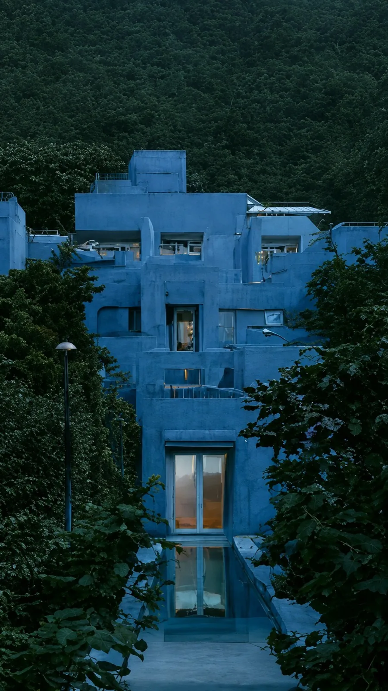
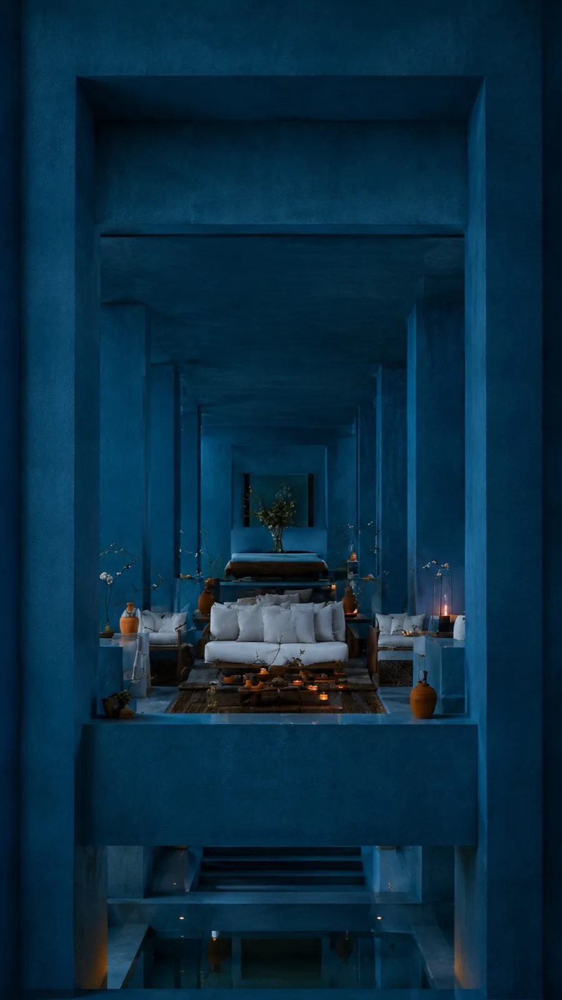

Image / in progress
Dark Mediterranean
An in-progress hospitality study for a real estate agency, where the resort is hypothetical but its geometry is not: the building is modelled first, and every generated frame has to agree with the model it came from.
- Year
- 2026
- Kind
- Image
- Role
- Concept, art direction, generative production
- Frames
- 9:16 stills and 3x3 editorial grids
The constraint
The same building in every frame.
The set is generated from one 3D massing model, so the roofline, the step of the terraces and the position of the pool are settled before a prompt is written. Distance and light are free to move. Geometry is not, because an agency is selling something that has to be buildable.


Open the work
Primary sources.
Structure
Establishing to intimate.
The nine positions are set on the model as a walk a buyer could actually take, which is also the order an agency needs: the site first, then the building, then the room being sold.
-
Row I
The hillside
The resort seen whole, through trees, from outside its own boundary. The row that has to prove the site.
-
Row II
The threshold
Windows and doorways, each one a lit interior read from the cold side of the wall. The row where the elevations have to hold.
-
Row III
The table
Dinner laid, loungers turned out, a lantern left on. Occupied, and empty. The row that sells the room.
How it is being built
Pipeline.
Built as a Runway workflow so the model does the deciding. The massing render conditions every generation, which leaves the prompt responsible for light and mood and nothing structural.
The resort built as 3D massing first, with site, levels and sightlines resolved before any frame exists.
Camera positions set on the model and numbered, so each final frame has a coordinate rather than a description.
Each position rendered out and passed into the workflow as the reference the generation has to agree with.
Frames read back against the model and cut when a wall, a level or a sightline has moved.
Warm interiors protected so they survive as the single accent against the blue.